Front Seat Belt Replacement
Front Seat Belt ReplacementSRS components are located in this area. Review the SRS component locations and the precautions and procedures in the SRS before doing repairs or service.
NOTE: Check the front seat belts for damage, and replace them if necessary. Be careful not to damage them during removal and installation.
Front Seat Belt - 2-door
1. Make sure you have the anti-theft codes for the audio or the navigation system, then write down the audio presets.
2. Slide the front seat forward fully.
3. Disconnect the negative cable from the battery, and wait at least 3 minutes before beginning work.
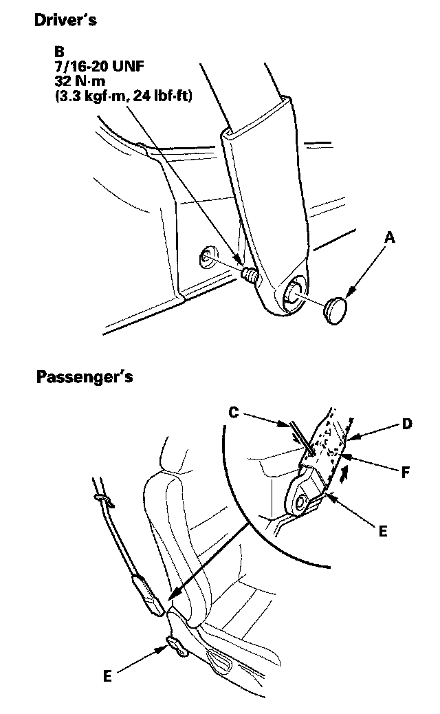
4. Remove the seat belt lower anchor.
- Driver's seat belt: Remove the lower anchor cap (A), and remove the lower anchor bolt (B).
- Passenger's seat belt: Carefully insert the tip of a small screwdriver (C) through the hole in the back of the front seat belt lower anchor cover (D) and into the hole in the front seat belt lower anchor (E).
Unlock the lower anchor by pushing in on the screwdriver. Remove the screwdriver, and then detach the front seat belt anchor plate (F) and anchor cover from the lower anchor.
5. Remove these items:
- Door sill trim
- Rear side trim panel
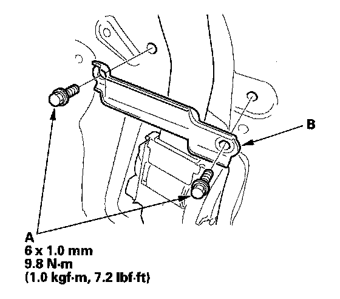
6. Remove the bolts (A) and the seat belt guide (B).
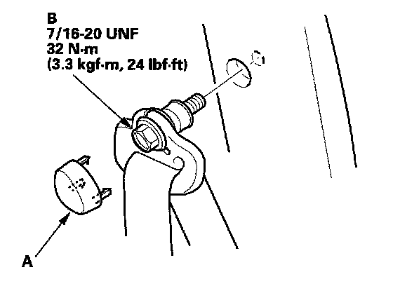
7. Remove the upper anchor cap (A), and remove the upper anchor bolt (B).
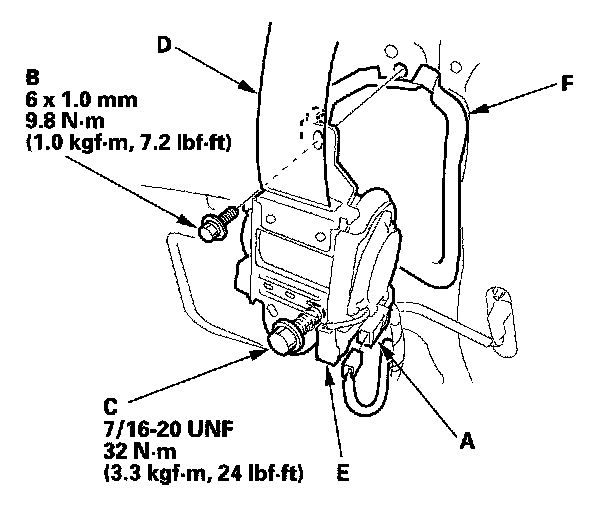
8. Disconnect the seat belt tensioner connector (A). Remove the upper retractor mounting bolt (B) and the lower retractor bolt (C), then remove the front seat belt (D) and retractor (E).
9. If necessary, remove the front seat belt protector (F).
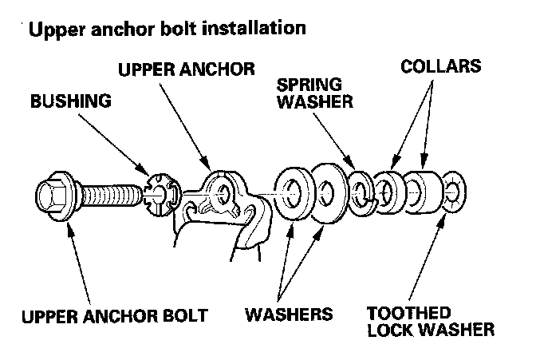
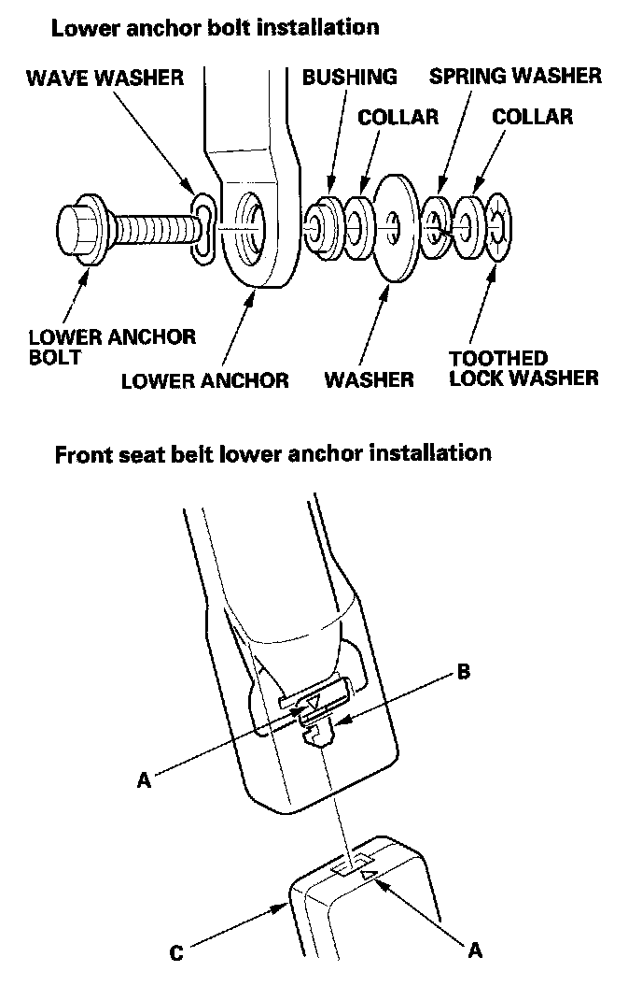
10. Install the belt in the reverse order of removal, and note these items:
- Check that the retractor locking mechanism functions.
- Assemble the washers, collars, and bushings on the upper and lower anchor bolts as shown.
- If the seat belt tensioner has been deployed, replace the front seat belt protector with a new one.
- Apply medium strength type liquid thread lock to the anchor bolts before reinstallation.
- Before installing the anchor bolts, make sure there are no twists or kinks in the front seat belt.
- Make sure the seat belt tensioner connector is plugged in properly.
- Passenger's seat belt: Before attaching the front seat belt lower anchor, make sure there are no twists or kinks in the belts.
- Passenger's seat belt: Triangle marks (A) on the anchor plate (B) and on the lower anchor (C) must face the same side.
- Passenger's seat belt: Insert the hook on the anchor plate into the lower anchor, and be sure that the lower anchor is locked securely.
- Reconnect the negative cable to the battery.
- Enter the anti-theft codes for the audio or the navigation system, then enter the audio presets.
- Set the clock.
- Check for any DTCs that may have been set during repairs, and clear them.
Front Seat Belt - 4-door
SRS components are located in this area. Review the SRS component locations and the precautions and procedures before doing repairs or service.
NOTE: Check the front seat belts for damage, and replace them if necessary.
1. Make sure you have the anti-theft codes for the audio or the navigation system, then write down the audio presets.
2. Disconnect the negative cable from the battery, and wait at least 3 minutes before beginning work.
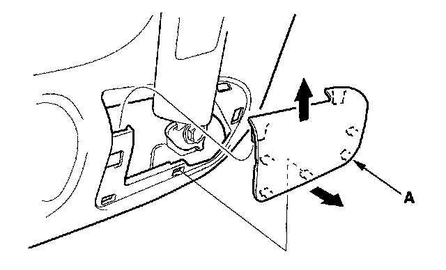
3. Slide the front seat forward fully, and remove the anchor cover (A).
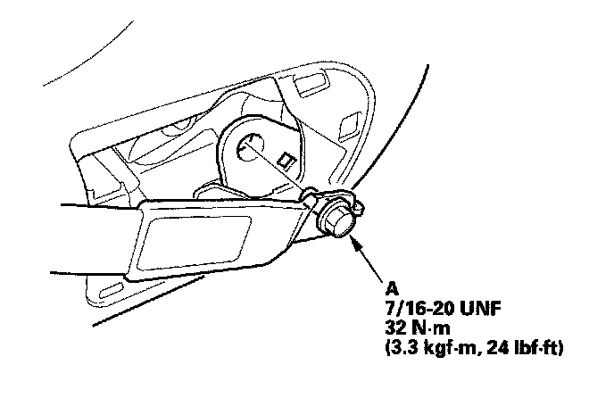
4. Remove the lower anchor bolt (A).
5. Remove the B-pillar lower trim.
6. Remove the B-pillar upper trim and slider.
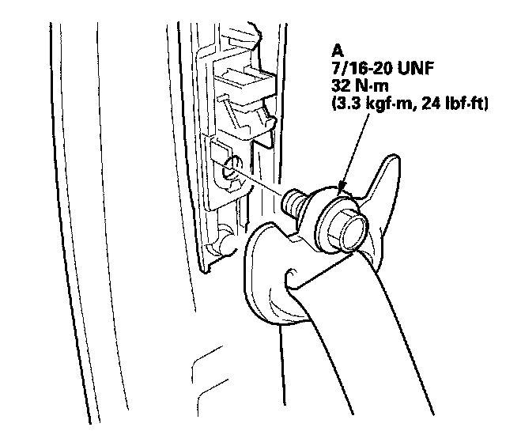
7. Remove the upper anchor bolt (A).
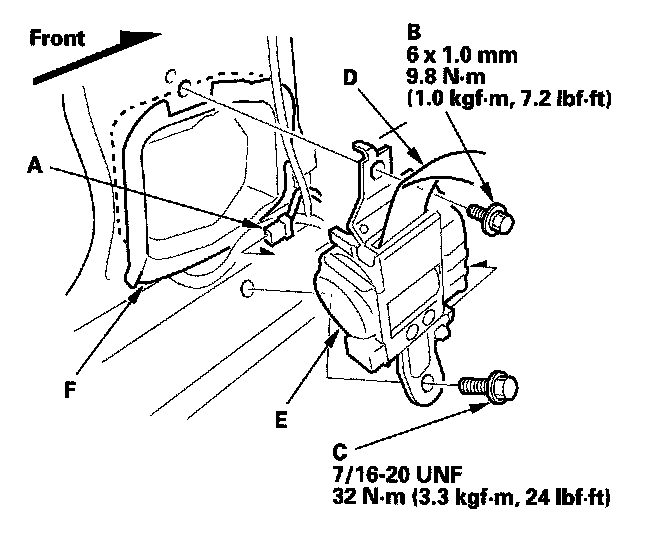
8. Disconnect the seat belt tensioner connector (A). Remove the upper retractor mounting bolt (B) and the lower retractor bolt (C), then remove the front seat belt (D) and retractor (E).
9. If necessary, remove the front seat belt protector (F).
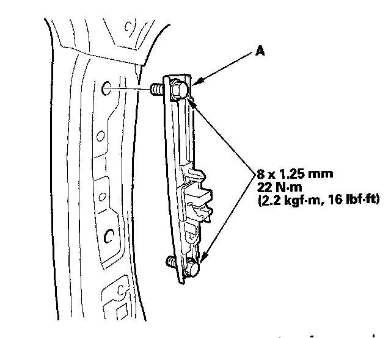
10. Remove the shoulder anchor adjuster (A).
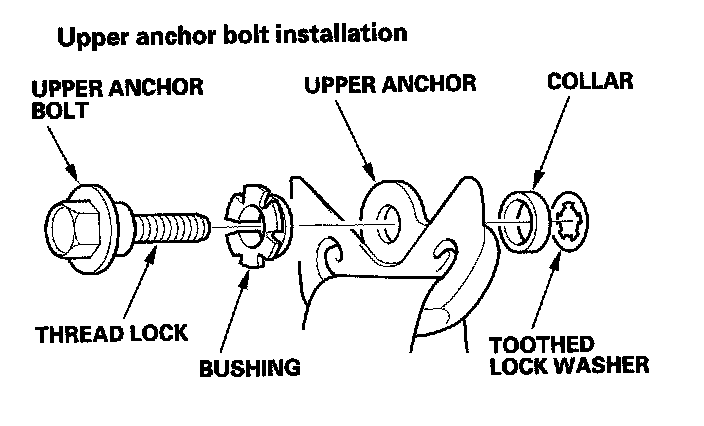
11. Install the seat belt in the reverse order of removal, and note these items:
- Apply medium strength type liquid thread lock to the anchor bolts before reinstallation.
- Tighten the bolts by hand first, then tighten to the specified torque.
- Check that the retractor locking mechanism functions as described.
- Assemble the washer, collar, and bushing on the upper anchor bolt as shown.
- If the seat belt tensioner has been deployed, replace the front seat belt protector with a new one.
- Before installing the anchor bolts, make sure there are no twists or kinks in the seat belt.
- Make sure the seat belt tensioner is properly plugged in.
- Reconnect the negative cable to the battery.
- Enter the anti-theft codes for the audio or the navigation system, then enter the audio presets.
- Set the clock.
- Check for any DTCs that may have been set during repairs, and clear them.
Front Seat Belt Buckle
1. Make sure you have the anti-theft code for the audio or the navigation system, then write down the audio presets.
2. Disconnect the negative cable from the battery, and wait at least 3 minutes before beginning work
3. Remove the front seat.
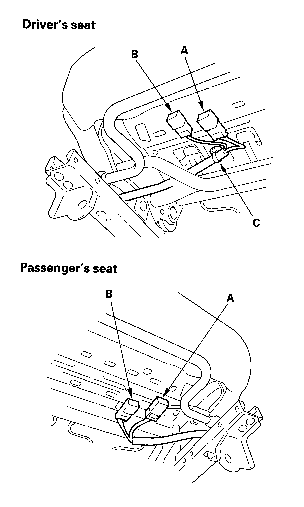
4. Lift up the front seat, then detach the seat belt switch connector (A) and seat belt buckle tensioner connector (B), and on the driver's seat, detach the harness clip (C).
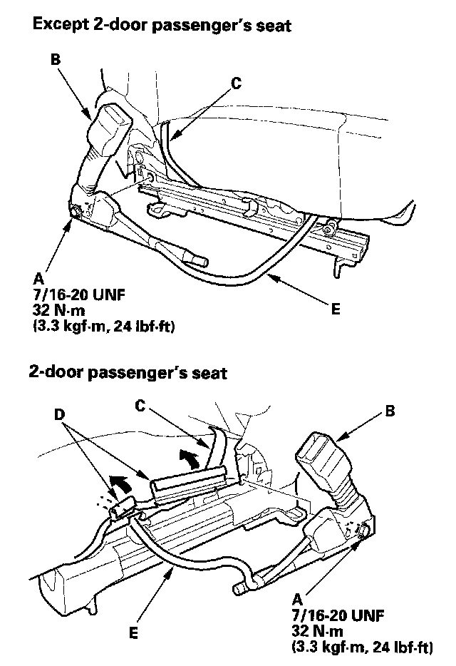
5. Remove the center anchor bolt (A), then remove the seat belt buckle (B) from the elastic band (C).
6. 2-door Passenger's seat: Release the hook strips (D) and pull back the seat cushion cover.
7. Pull the seat belt switch harness (E) out through the space between the seat cushion and the seat track (driver's seat), or through the hole in the seat track (passenger's seat).
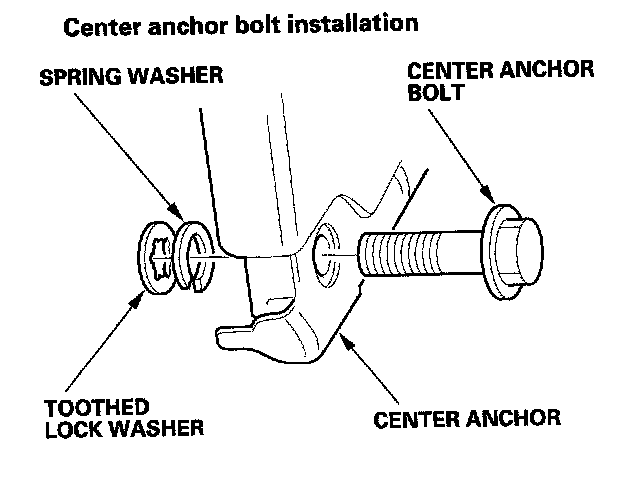
8. Install the buckle in the reverse order of removal, and note these items:
- Assemble the washers on the center anchor bolt as shown.
- Apply medium strength type liquid thread lock to the center anchor bolt before reinstallation.
- Tighten the bolts by hand first, then tighten to specification with a torque wrench.
- Make sure the seat belt switch connector and seat belt buckle tensioner connector are plugged in properly.
- Reconnect the negative cable to the battery.
- Enter the anti-theft codes for the audio or the navigation system, then enter the audio presets.
- Set the clock.
- Check for any DTCs that may have been set during repairs, and clear them.
Passenger's Seat Belt Lower Anchor
1. Remove the door sill trim.
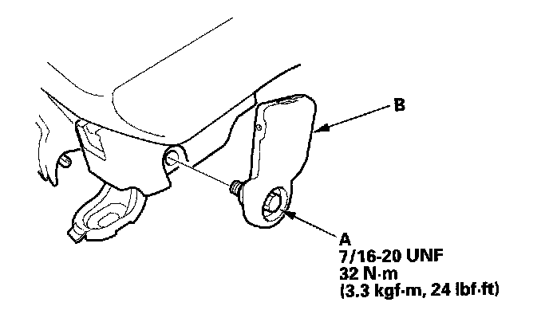
2. Remove the lower anchor bolt (A), then remove the lower anchor (B).
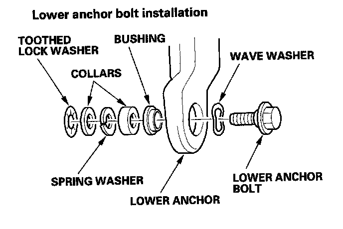
3. Install the lower anchor in the reverse order of removal, and note these items:
- Apply medium strength type liquid thread lock to the lower anchor bolt before reinstallation.
- Assemble the washers, collars, and bushing on the lower anchor bolt as shown.